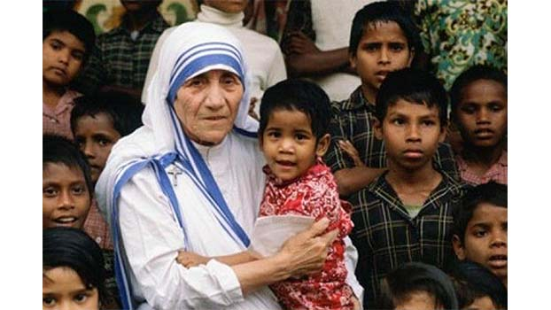

Through our Indoor or Mobile Primary Healthcare Facilities we offer primary medical care and medication to patients who are not able to afford medical care in hospitals or clinics. We also have Indoor and Mobile Primary Healthcare Facilities for treating patients suffering from Hansen’s disease as well as for the patients suffering from Tuberculosis, HIV and malnutrition.
Our Services
Our objective is to love and serve the poorest of the poor, both materially and spiritually, not only in the slums, but also all over the world wherever they may be. In loving and serving the poorest of the poor, we endeavor to live the love of God in prayer and action in a life marked by the simplicity and humility of the Gospel. We “put our love into action” by: • nursing the sick and dying destitutes; • gathering and teaching the poor and little street children; • visiting and caring for beggars, leprosy patients and their children; • giving shelter to the abandoned and homeless; • caring for the unwanted, the unloved and the lonely. In her effort to “bring souls to God and God to the souls”, Mother Teresa taught us: “What these poor people need desperately is genuine kindness – But what we want to bring into their lives is not merely kindness and benevolence! Our spirit is the spirit of Christ, Whom we see and serve in the poor, the suffering and the sick. Hence mere material help, even the most abundant, could never change these lives for the better. However if supplemented and inspired by spiritual outlook and guidance, surely some bright rays of hope and courage will penetrate into their sad lives, and do away, to some extent with that terrible destitution that drives so many to lawlessness, vice and despair.” The mission of our active Sisters is supported by the prayer, silence, fasting and penance of our contemplative Sisters.
